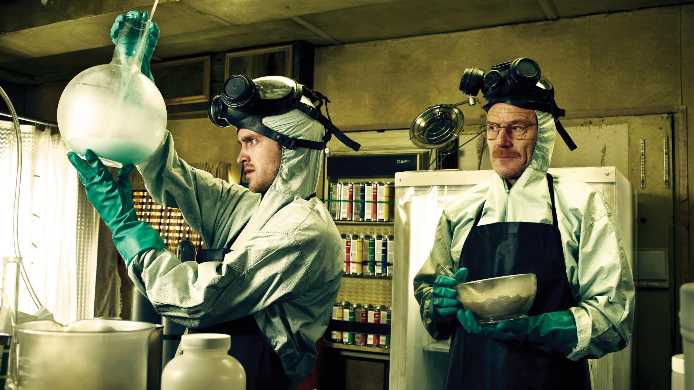

O ator principal, Bryan Cranston, declarou numa entrevista que "o termo 'breaking bad' é uma gíria do Sul que significa que alguém desviou-se do caminho correto e passou a fazer coisas erradas. E isto aplica-se tanto a um dado momento quanto a uma vida inteira."
Breaking Bad foi criado por Vince Gilligan, que, por vários anos, foi roteirista da série The X-Files. Gilligan queria criar uma série em que o protagonista torna-se o antagonista. "A televisão é historicamente boa em manter seus personagens em uma estase auto-imposto de modo que shows podem durar anos ou mesmo décadas", disse ele. "Quando percebi isso, o próximo passo lógico era pensar, como posso fazer um show em que a unidade fundamental é para a mudança?" Ele acrescentou que seu objetivo com Walter White foi para transformá-lo de Sr. Chips para Scarface.